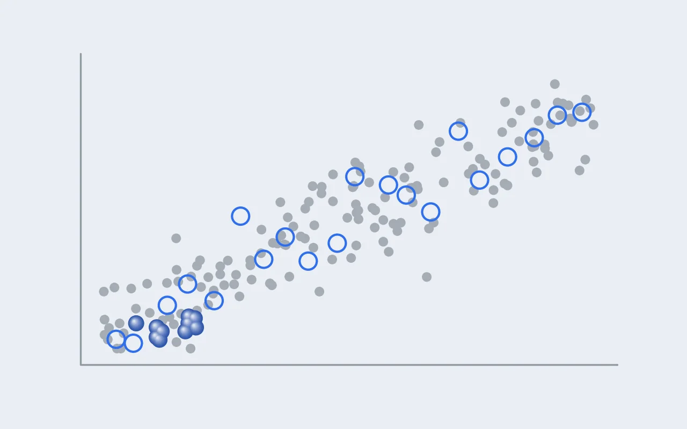

연구 [2] — 540만 가지 배열에서 1,034개의 팔면체로: 고르고, 거르고, 확정하는 법
연구 [1]에서 질문을 정했습니다. Mn³⁺의 얀-텔러 왜곡을 정하는 것은 바로 옆 이웃인가, 얀-텔러 이온의 비율인가. 이번 글은 그 질문에 답할 데이터를 어떻게 만들었는지에 관한 기록입니다. 결과는 다음 글에 미루고, 결과를 믿어도 되는 이유를 먼저 쌓아 두려고 합니다.

이 글에 나오는 말
- 배열(배치): 같은 조성에서 전이금속(TM) 16자리에 원소를 놓는 한 가지 방법입니다. C3는 5,405,400가지입니다.
- CHGNet: Materials Project의 DFT 계산 150만여 개로 학습한 범용 기계학습 퍼텐셜입니다. 에너지·힘·자기모멘트를 DFT보다 수천 배 빨리 예측하며, 이 글에서는 같은 조성 안에서 배열의 순위를 매기는 데만 씁니다.
- 몬테카를로 탐색: TM 둘의 자리를 맞바꾼 뒤 에너지가 내려가면 받아들이고 올라가면 확률적으로 받아들이기를 되풀이해 낮은 배열을 찾는 방법입니다(메트로폴리스 방식).
- 바닥 후보와 다양성 후보: 조성마다 DFT로 보낸 30개 가운데 CHGNet 에너지가 가장 낮은 10개와, Mn³⁺ 주변의 이웃 구성이 서로 최대한 다르도록 고른 20개입니다.
- dlong/dshort: Mn–O 여섯 결합 가운데 긴 둘의 평균을 짧은 넷의 평균으로 나눈 값으로, 얀-텔러 왜곡의 크기입니다(정팔면체 1, α-NaMnO₂ 1.24).
- 자기모멘트로 가수 판별: DFT는 원자마다 홀전자 수에 가까운 자기모멘트를 내놓습니다. Mn³⁺는 3.8~3.9 μB, Mn⁴⁺는 약 3.0 μB이고, 3.4 μB를 기준으로 나눕니다.
- fJT: 셀 안에서 실제로 판별된 Mn³⁺의 수를 16으로 나눈 값입니다.
요약
질문. 고엔트로피 조성 하나에 원자 배치가 수백만 가지일 때, 어떤 배열을 얼마나 계산해야 그 조성을 대표할 수 있는가.
방법. TM 16자리의 64원자 셀에서 조성마다 무작위 배열 600개와 몬테카를로 탐색 10회를 CHGNet으로 이완해 서로 다른 셀 3,146개를 얻었습니다. 조성마다 에너지가 가장 낮은 10개와 이웃 환경이 서로 가장 다른 20개를 DFT(PBE+U)로 셀 모양까지 이완했습니다. 셀마다 자리별 자기모멘트로 Mn³⁺를 판별해 왜곡의 크기와 가장 가까운 TM 여섯 자리의 구성을 기록했습니다.
답. 180개가 모두 수렴해 Mn³⁺ 팔면체 1,034개를 얻었습니다. 그 과정에서 세 가지를 확인했습니다. 바닥 후보만 고르면 이웃과 왜곡의 상관이 부풀려지고, 셀 전체 자기모멘트로는 Ni와 Mn 사이의 전하 이동이 보이지 않으며, CHGNet 구조에서 출발한 DFT는 그 흔적을 물려받을 수 있어 지금 시험 중입니다.
1. 왜 "배열"을 세야 하나
보통의 결정은 원자마다 앉을 자리가 정해져 있어서, 단위 셀 하나만 계산하면 그 물질을 대표할 수 있습니다. 고엔트로피 조성은 다릅니다. 예를 들어 C3(Na[Mn₀.₅Fe₀.₂₅Ni₀.₁₂₅Ti₀.₁₂₅]O₂)는 TM 16자리에 Mn 8개, Fe 4개, Ni 2개, Ti 2개가 들어가는데, 이걸 배치하는 방법이 5,405,400가지입니다. 그리고 Mn³⁺ 하나가 느끼는 이웃은 배치마다 다릅니다.
| 조성 | TM 16자리의 원소 | 가능한 배치 | CHGNet 이완 뒤 서로 다른 셀 |
|---|---|---|---|
| C1 | Mn 8 · Fe 8 | 12,870 | 352 |
| C2 | Mn 8 · Ni 4 · Ti 4 | 900,900 | 606 |
| C3 | Mn 8 · Fe 4 · Ni 2 · Ti 2 | 5,405,400 | 610 |
| C4 | Mn 8 · Fe 2 · Ni 4 · Ti 2 | 5,405,400 | 608 |
| C5 | Mn 8 · Fe 4 · Ni 4 | 900,900 | 608 |
| C6 | Mn 8 · Ni 8 | 12,870 | 362 |
그렇다고 540만 개를 다 DFT로 계산할 수는 없습니다. 64원자 셀 DFT 한 건이 노드 하나에서 수십 시간이 걸리기 때문입니다. 그래서 이 연구는 값싼 계산으로 넓게 거르고, 비싼 계산으로 좁게 확정하는 두 단계를 씁니다.
2. 왜 64원자 셀인가
셀 크기는 세 가지를 저울질해서 정했습니다.
- 조성의 눈금. TM 자리가 16개면 원소 비율을 1/16(0.0625) 단위로 맞출 수 있습니다. C3의 Ni₀.₁₂₅처럼 0.125가 필요한 조성도 원자 2개로 정확히 표현됩니다.
- 이웃의 다양성. 셀이 너무 작으면 주기 경계 때문에 한 원자가 자기 복사본을 이웃으로 갖게 됩니다. 64원자 셀은 같은 층 안에서 한 변이 약 11–12 Å라서, 가장 가까운 TM 여섯 자리(약 3.0 Å)는 서로 다른 원자로 채워집니다.
- 계산 비용. DFT 비용은 원자 수에 따라 가파르게 늘어서, 128원자로 키우면 180건을 같은 기간에 끝낼 수 없었습니다.
실습 [11]의 G1 검증은 24원자 셀이었는데, 같은 얀-텔러 이온 비율에서 왜곡이 64원자 셀보다 조금 작게 나왔습니다. 셀 크기가 결과에 영향을 줄 수 있다는 신호라서, 본 계산은 감당할 수 있는 가장 큰 셀로 잡았습니다. 이 한계는 결과편에서 다시 따집니다.
3. 1단계: CHGNet으로 거르기
CHGNet은 Materials Project의 DFT 계산에서 나온 구조 150만여 개(화합물 14만 6천여 개)로 학습한 범용 기계학습 퍼텐셜입니다 [1]. DFT보다 수천 배 빠르면서 에너지, 힘, 자기모멘트까지 예측합니다. 실습 [11]에서 시험해 보니 같은 조성 안에서 배열의 순위는 잘 맞히지만(스피어만 0.92), 조성끼리의 에너지 차이나 전하가 퍼지는 정도는 틀리는 경우가 있었습니다. 그래서 여기서는 CHGNet을 "같은 조성 안에서 후보를 줄 세우는 도구"로만 씁니다.
조성마다 두 방식으로 배열을 모았습니다.
- 무작위 배열 600개. 시드 두 개로 300개씩 만들어 CHGNet으로 원자 위치와 셀 모양을 이완했습니다. 배치 공간을 고르게 훑기 위한 것입니다.
- 몬테카를로 탐색 10회. 아무 배열에서 출발해 TM 두 개의 자리를 맞바꾸고, 30스텝만 짧게 이완한 뒤, 에너지가 내려가면 받아들이고 올라가면 확률적으로 받아들이는 과정을 150번 되풀이했습니다(메트로폴리스 방식). 무작위로는 잘 걸리지 않는 아주 낮은 배열을 찾기 위한 것입니다.
두 방식은 역할이 다릅니다. 실제로 열두 번의 탐색(6조성 × 시드 2) 모두에서 몬테카를로가 무작위 600개 중 최저보다 더 낮은 배열을 찾았습니다. 반면 무작위 배열은 에너지가 높은 쪽까지 넓게 퍼져 있어서, 뒤에서 다양성 후보를 고를 재료가 됩니다. 마지막으로 이완된 셀들을 대칭으로 비교해 같은 배열을 걸러냈습니다(pymatgen [2]).
4. 2단계: DFT로 확정할 30개 고르기
조성마다 남은 350–610개 중 30개를 DFT로 보냈습니다. 고르는 기준은 두 가지입니다.
- 바닥 후보 10개. CHGNet 에너지가 가장 낮은 배열입니다. 실제 합성에서 생길 가능성이 높은 배열이고, CHGNet이 진짜 바닥을 놓쳤을 때를 대비해 하나가 아니라 열 개를 봅니다.
- 다양성 후보 20개. Mn³⁺ 주변의 이웃 구성이 서로 최대한 다르도록 고른 배열입니다. 에너지는 상관하지 않습니다.
다양성 후보가 왜 필요할까요? 이 연구의 질문은 "이웃이 왜곡을 정하느냐"인데, 바닥 후보만 모으면 이웃 환경이 비슷한 배열끼리만 모이게 됩니다. 에너지가 낮은 배열들은 대체로 비슷한 규칙(예를 들어 같은 원소끼리 붙지 않기)을 따르기 때문입니다. 그러면 이웃의 범위가 좁아져서, 진짜 효과는 못 보거나 반대로 우연히 같이 움직인 다른 요인을 효과로 착각할 수 있습니다.
실제로 있었던 일
바닥 후보 60개만 분석했을 때, "Mn³⁺끼리 많이 이어진 배열일수록 왜곡이 크다"는 상관이 0.9를 넘게 나왔습니다. 논문의 한 축이 될 만한 결과였습니다. 그런데 다양성 후보 120개를 더하자 이 상관은 0.5 안팎으로, 조성에 따라서는 0.06까지 떨어졌습니다. 다양성 후보를 따로 고르지 않았다면 틀린 결론을 논문에 실을 뻔했습니다. 자세한 내용은 결과편에서 다룹니다.
DFT의 출발 자기모멘트(MAGMOM)는 CHGNet이 예측한 자리별 모멘트를 그대로 넣었습니다. 어느 Mn이 3가이고 어느 Mn이 4가인지를 처음부터 맞게 주면, DFT가 엉뚱한 전하 배치에 갇힐 위험이 줄어듭니다.
5. 3단계: DFT 설정
| 항목 | 값 | 근거 |
|---|---|---|
| 프로그램, 퍼텐셜 | VASP 6.4.3, PAW [3, 4] | |
| 교환상관 | PBE [5] + U (Dudarev 방식 [6]) | 전이금속 d 전자의 자기 상호작용 오차 보정 |
| U 값 | Mn 3.9, Fe 5.3, Ni 6.2 eV (Ti 없음) | 산화 에너지에 맞춘 값 [7], Materials Project와 같음 |
| 평면파 차단 에너지 | 520 eV | 셀 모양 이완에서 생기는 Pulay 응력 방지, 수렴 시험으로 확인 |
| k점 | 축 길이 × k ≈ 23 Å | 셀 모양이 달라도 같은 밀도 |
| 스핀 | 강자성 출발 | 배열 비교를 위해 통일 (6절의 한계 참고) |
| 이완 | 원자 위치, 셀 모양과 부피 모두 | 얀-텔러는 격자 전체를 변형하므로 |
| 수렴 기준 | 모든 힘 < 0.02 eV/Å | 0.05에서 배열이 바뀐 사례가 있어 엄격하게 |
수렴 기준은 한 번 겪은 뒤에 정했습니다. 힘 기준을 0.05 eV/Å로 느슨하게 시험했을 때 거의 모든 경우 결과가 같았지만, C6의 한 배열은 47스텝 뒤에 원자 배치가 바뀌며 에너지가 6.2 meV 내려갔습니다. 하나라도 이런 경우가 있으면 "바닥"의 판정이 흔들리니, 180건 모두 0.02 eV/Å로 통일했습니다. 180건 모두 이 기준을 만족하고 끝났습니다.
6. 무엇을 재나
DFT가 끝난 셀마다 Mn³⁺ 자리를 골라내고, 자리마다 세 가지를 기록합니다.
Mn³⁺는 어떻게 골라내나
DFT는 "이 Mn은 3가"라고 알려주지 않습니다. 대신 원자마다 홀전자 수에 해당하는 자기모멘트가 나오고, 그 값이 가수를 판별하는 기준이 됩니다.
| 이온 | d 전자 | DFT 자기모멘트 (대략) |
|---|---|---|
| Mn³⁺ | d⁴, 홀전자 4 | 3.8–3.9 μB |
| Mn⁴⁺ | d³, 홀전자 3 | 약 3.0 μB |
| Fe³⁺ (고스핀) | d⁵, 홀전자 5 | 약 4.3 μB |
| Ni²⁺ | d⁸, 홀전자 2 | 약 1.7 μB (실습 [10]) |
| Ni³⁺ (저스핀) | d⁷, 홀전자 1 | 약 1.1 μB |
| Ti⁴⁺ | d⁰ | 약 0 |
처음에는 셀 전체의 자기모멘트가 설계값과 맞는지만 확인했습니다. 180건 모두 맞았습니다. 그런데 자리별로 다시 보니, 일부 셀에서는 Ni²⁺ + Mn⁴⁺ → Ni³⁺ + Mn³⁺로 전자 하나가 옮겨가 있었습니다. 이 이동은 셀 전체 모멘트를 바꾸지 않습니다. Mn⁴⁺(3) + Ni²⁺(2) = 5이고, Mn³⁺(4) + Ni³⁺(1) = 5이기 때문입니다. 그래서 전하 상태는 반드시 자리별로 확인해야 합니다. 이 전하 이동이 왜, 어디서 생기는지는 결과편의 중요한 이야기 중 하나입니다.
세 가지 기록
- 왜곡의 크기: dlong/dshort (그림 3 왼쪽)
- 이웃 화학: 가장 가까운 TM 여섯 자리의 Mn³⁺, Mn⁴⁺, Fe³⁺, Ni²⁺, Ni³⁺, Ti⁴⁺ 개수 (그림 3 오른쪽)
- 얀-텔러 이온 비율 fJT: 그 셀의 Mn³⁺ 개수 ÷ 16. 설계값이 아니라 실제로 판별된 Mn³⁺로 셉니다. 전하 이동이 일어난 셀은 설계와 다른 fJT를 갖게 되는데, 덕분에 fJT가 0.0625부터 0.5까지 여덟 단계로 채워졌습니다.
7. 지금 확인 중인 것: 출발 구조의 흔적
방법을 정리하다 보니 하나 걸리는 것이 있었습니다. DFT 계산은 모두 CHGNet이 이완한 구조에서 출발했습니다. 그런데 구조 이완은 가까운 에너지 바닥으로 내려갈 뿐, 언덕을 넘어 다른 바닥으로 가지는 못합니다. 만약 CHGNet이 어떤 경향, 예를 들어 늘어난 축을 모두 같은 방향으로 맞추는 경향을 가지고 있다면, DFT 결과도 그 흔적을 물려받을 수 있습니다.
실제로 Mn³⁺ 팔면체의 긴 축 방향을 비교해 보니, DFT와 CHGNet이 같은 자리에서 98.6% 일치했습니다. 좋은 소식처럼 보이지만, 거꾸로 "DFT가 CHGNet의 방향을 그대로 물려받았다"는 뜻일 수도 있습니다. 이를 가리려고 지금 시험 계산 6건을 돌리고 있습니다. 원소 배열은 그대로 두고, 모든 팔면체를 왜곡 없는 정팔면체로 되돌린 뒤 원자를 0.05 Å씩 무작위로 흔든 구조에서 DFT를 다시 시작하는 것입니다. 축 방향에 대한 정보가 전혀 없는 출발점에서도 같은 답이 나오면 데이터를 믿을 수 있고, 다른 답이 나오면 그 자체가 새로운 발견이 됩니다.
이 방법의 한계
- 셀 크기: 64원자 셀은 한 변이 약 11–12 Å라서, 그보다 먼 거리의 효과는 주기 경계에 영향을 받습니다.
- 온도와 스핀: 모든 계산은 0 K, 강자성 배열입니다. 실제 반강자성 배열이나 상온의 열적 요동은 반영하지 않았습니다.
- 출발 구조: 7절의 시험이 끝나기 전까지, 축 방향과 관련된 결론은 잠정적입니다.
정리
- 고엔트로피 조성은 배열의 집합으로 다룬다. C3 하나에 540만 가지 배치가 있으니, 배열 하나로는 조성을 대표할 수 없다.
- 값싸게 넓게, 비싸게 좁게. CHGNet으로 3,146개를 줄 세우고, DFT로 180개를 확정했다. CHGNet은 같은 조성 안의 순위를 매기는 데만 쓴다.
- 바닥만 고르면 안 된다. 서술자를 시험하려면 이웃 환경이 넓게 퍼진 다양성 후보가 필요하다. 실제로 바닥 후보만으로 본 상관 하나가 다양성 후보를 더하자 사라졌다.
- 전하 상태는 자리별로. 셀 전체 자기모멘트로는 Ni와 Mn 사이의 전하 이동이 보이지 않는다.
- 출발 구조의 흔적을 의심한다. 기계학습 퍼텐셜이 만든 구조에서 출발한 DFT는 그 경향을 물려받을 수 있다. 지금 시험 중이다.
다음. 이제 데이터가 준비됐습니다. 다음 글에서는 1,034개 팔면체로 연구 [1]의 질문에 답하겠습니다. 이웃만 바꾼 C1–C3의 왜곡은 같았을까요, 달랐을까요?
참고문헌
- Deng, B. et al. CHGNet as a pretrained universal neural network potential for charge-informed atomistic modelling. Nat. Mach. Intell. (2023).
- Ong, S. P. et al. Python Materials Genomics (pymatgen): a robust, open-source python library for materials analysis. Comput. Mater. Sci. 68, 314 (2013).
- Kresse, G. & Furthmüller, J. Efficient iterative schemes for ab initio total-energy calculations using a plane-wave basis set. Phys. Rev. B 54, 11169 (1996).
- Kresse, G. & Joubert, D. From ultrasoft pseudopotentials to the projector augmented-wave method. Phys. Rev. B 59, 1758 (1999).
- Perdew, J. P., Burke, K. & Ernzerhof, M. Generalized gradient approximation made simple. Phys. Rev. Lett. 77, 3865 (1996).
- Dudarev, S. L. et al. Electron-energy-loss spectra and the structural stability of nickel oxide: an LSDA+U study. Phys. Rev. B 57, 1505 (1998).
- Wang, L., Maxisch, T. & Ceder, G. Oxidation energies of transition metal oxides within the GGA+U framework. Phys. Rev. B 73, 195107 (2006).

Seok
연구하면서 개발합니다. 배터리 재료를 원자 단위에서 계산하는 법을 바닥부터 배우는 중입니다. → 글 더 보기